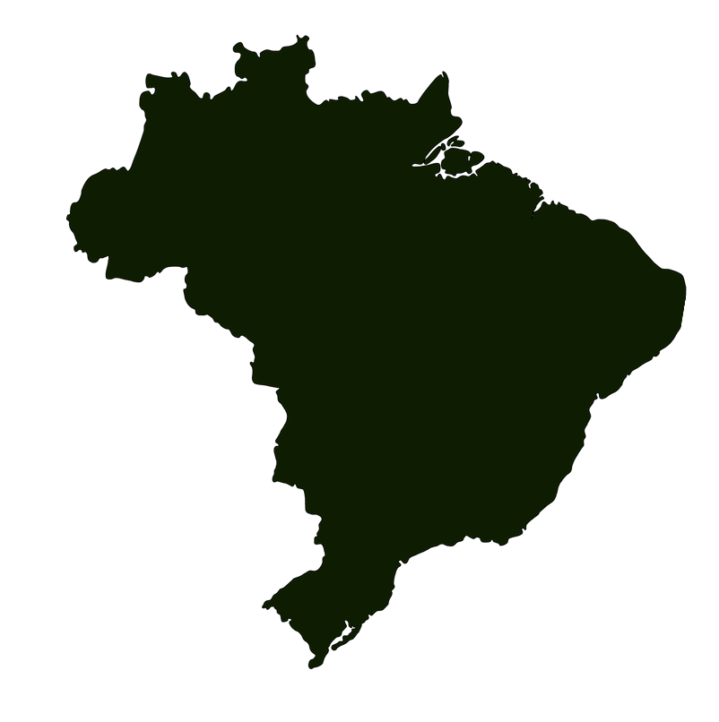

Sights


Never stop exploring! Come to visit the Brazil and enjoy a country that’s have a variety of culture in everywhere.
Brazil officially the Federative Republic of Brazil is the largest country in both South America and Latin America. At 8.5 millionsquare kilometers and with over 211 million people, Brazil is the world's fifth-largest country by area and the sixth most populous. Its capital is Brasília, and its most populous city is São Paulo. The federation is composed of the union of the 26 states and the Federal District. It is the largest country to have Portuguese as an official language and the only one in the Americas; it is also one of the most multicultural and ethnically diverse nations, due to over a century of mass immigration from around the world; as well as the most populous Roman Catholic-majority country.
Bounded by the Atlantic Ocean on the east, Brazil has a coastline of 7,491 kilometers. Its Amazon basin includes a vast tropical forest, home to diverse wildlife, a variety of ecological systems, and extensive natural resources spanning numerous protected habitats. This unique environmental heritage makes Brazil one of 17 megadiverse countries, and is the subject of significant global interest, as environmental degradation through processes like deforestation has direct impacts on global issues like climate change and biodiversity loss.
